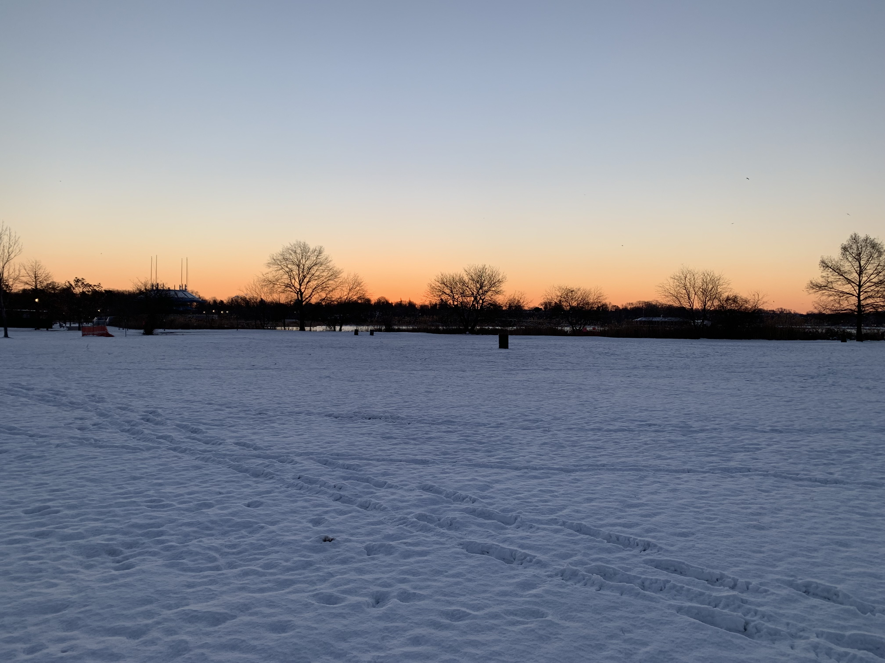

Welcome to B-Sides. The purpose of this website is to create a photographic journal chronicling the last year of my life. This isn't everything. It's a work in progress.
Though I am young, I feel like this last year of my life has been one of the most impactful periods of my life. Reason being that it's been a period of discovery - who I am, the world around me, and who I want to become. It's been a rocky journey, but I know that whatever is meant to be will happen, so that's helpful to remember when life feels overwhelming or out of control.
A book I hold near and dear to my heart is Daytripper by Fabio Moon. I feel like the following quote perfectly captures the motivation behind this photographic journal: "And sometimes we die to prove that we lived." Now, while I am not ddying to prove that I lived, these pictures were taken because at that moment I felt something and I wanted to capture it and share it with others.
These images are dear to me because I feel like they captured how I saw the world at particular points of time. There are good and bad times, and it's important to acknowledge both because it makes us who we are now. So, this is my way of sharing these emotions with others and hopefully they feel something and recognize that life is a journey - a long, rocky, beautiful journey.